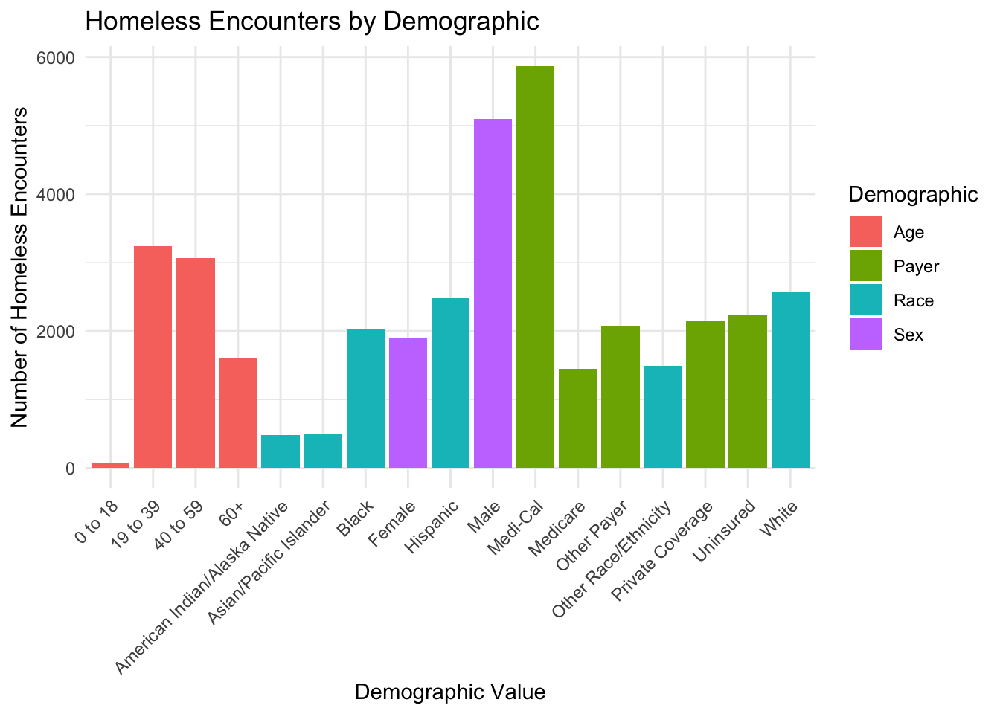
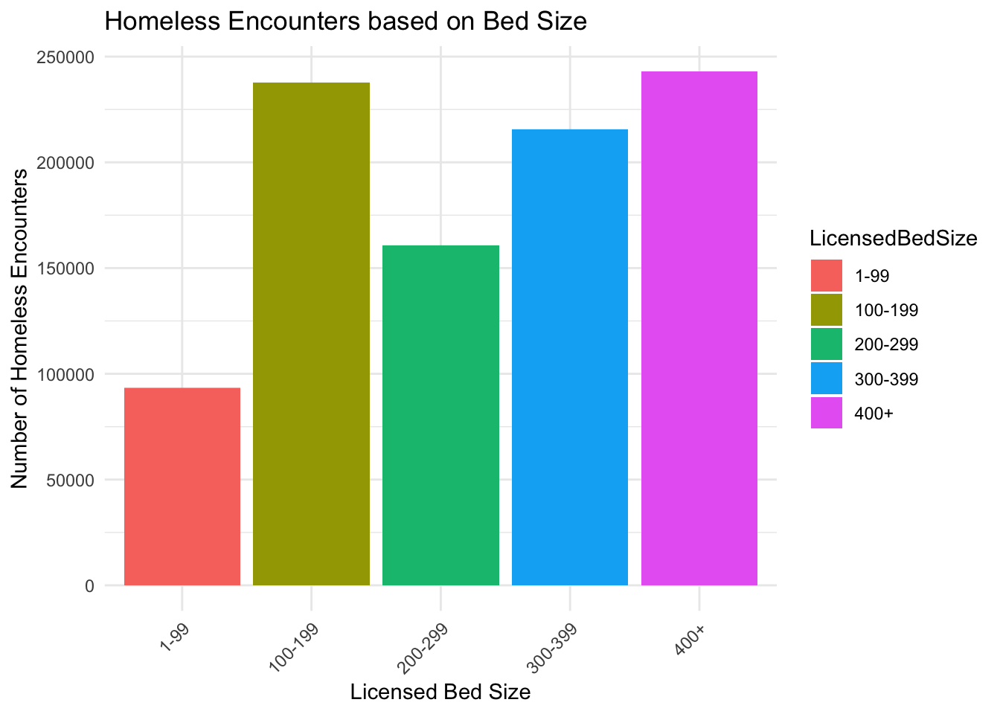
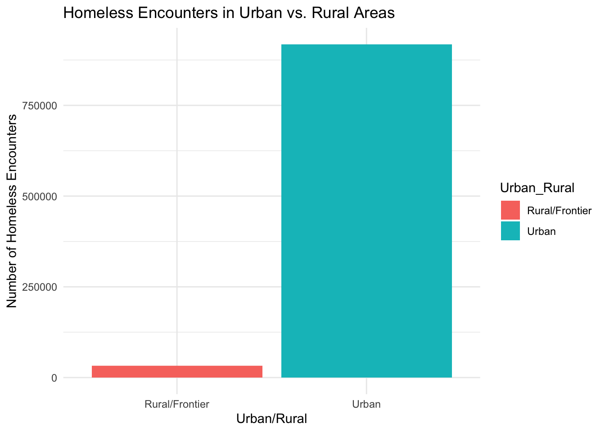
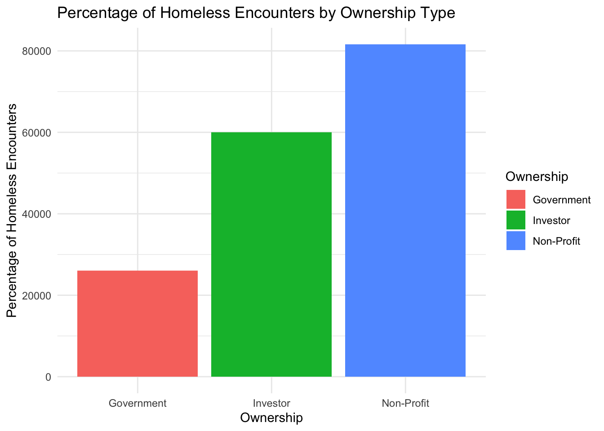

library(tidyverse)## ── Attaching core tidyverse packages ─────────────
## ✔ dplyr 1.1.4 ✔ readr 2.1.4
## ✔ forcats 1.0.0 ✔ stringr 1.5.0
## ✔ ggplot2 3.4.4 ✔ tibble 3.2.1
## ✔ lubridate 1.9.2 ✔ tidyr 1.3.0
## ✔ purrr 1.0.2
## ── Conflicts ──────────── tidyverse_conflicts() ──
## ✖ dplyr::filter() masks stats::filter()
## ✖ dplyr::lag() masks stats::lag()
## ℹ Use the conflicted package (<http://conflicted.r-lib.org/>) to force all conflicts to become errorshomeless_ip<-read.csv("2019-2020-homeless-ip-and-ed-by-facility.csv")
library(tidyverse)
# Cleaning data - filtering out non-homeless encounters
homeless_data<-homeless_ip %>%
filter(HomelessIndicator == "Homeless")
plot1<-homeless_ip %>%
filter(HomelessIndicator == "Homeless" & EncounterType == "Inpatient Hospitalizations") %>%
ggplot(aes(x = DemographicValue, y = Encounters, fill = Demographic)) +
geom_bar(stat = "identity", position = "dodge") +
labs(title = "Homeless Encounters by Demographic",
x = "Demographic Value",
y = "Number of Homeless Encounters") +
theme_minimal() +
theme(axis.text.x = element_text(angle = 45, hjust = 1))
plot1
From plot1 it is evident that comparing the number of homeless people by demographic shows a high number of payers have encountered homelessness in one way or the other. Based on sex there is a high number of males that face homeless encounters as compared to the women which shows a slightly lower number. Between Ages the age group 19-39 shows a huge number of encounters followed by 40-59 then 60+ and the least in the list was the age group of 0-18 years.
plot2<-homeless_ip %>%
filter(HomelessIndicator == "Homeless" & EncounterType == "Inpatient Hospitalizations") %>%
ggplot(aes(x = LicensedBedSize, y = Encounters, fill = LicensedBedSize)) +
geom_bar(stat = "identity") +
labs(title = "Homeless Encounters based on Bed Size",
x = "Licensed Bed Size",
y = "Number of Homeless Encounters") +
theme_minimal() +
theme(axis.text.x = element_text(angle = 45, hjust = 1))
plot2
Among the variable Bed Size, the category of 400+ Licensed Bed Size shows a high number of encounters of homelessness as compared to other groups. The lowest in the group is 1-99 category which indicated the lowest number of homelessness. The second leading category is the 100-199 Licensed Bed Size which was relatively high. This implies that Licensed bed Size varies with the number of homelessness encounters.
plot3<-homeless_ip %>%
filter(HomelessIndicator == "Homeless" & EncounterType == "Inpatient Hospitalizations") %>%
ggplot(aes(x = Urban_Rural, y = Encounters, fill = Urban_Rural)) +
geom_bar(stat = "identity") +
labs(title = "Homeless Encounters in Urban vs. Rural Areas",
x = "Urban/Rural",
y = "Number of Homeless Encounters") +
theme_minimal()
plot3
From the output to gain the understanding of the relationship Number of homelessness encounters and rural/ Urban settlement. It is evident that in urban areas there are many people who tend to be homeless due to various reasons such as poverty. On the other hand, in rural areas less people tend to be homeless since life there is cheap and easily affordable. The more the population in a certain place the higher the chances of homelessness encounters.
plot4<-homeless_ip %>%
filter(HomelessIndicator == "Homeless" & EncounterType == "Inpatient Hospitalizations") %>%
ggplot(aes(x = Ownership, y = Percent, fill = Ownership)) +
geom_bar(stat = "identity") +
labs(title = "Percentage of Homeless Encounters by Ownership Type",
x = "Ownership",
y = "Percentage of Homeless Encounters") +
theme_minimal()
plot4
When comparing the percentage of homeless encounters by ownership the non-profit category showed the highest percentage in homeless encounters. The investor category was the second highest in percentage showing a large number of homelessness encounters. The lowest sector of ownership is the government which indicated a low percentage in the homelessness encounters. Most non-profit individuals have encountered homelessness in one way or another which is lower than government.